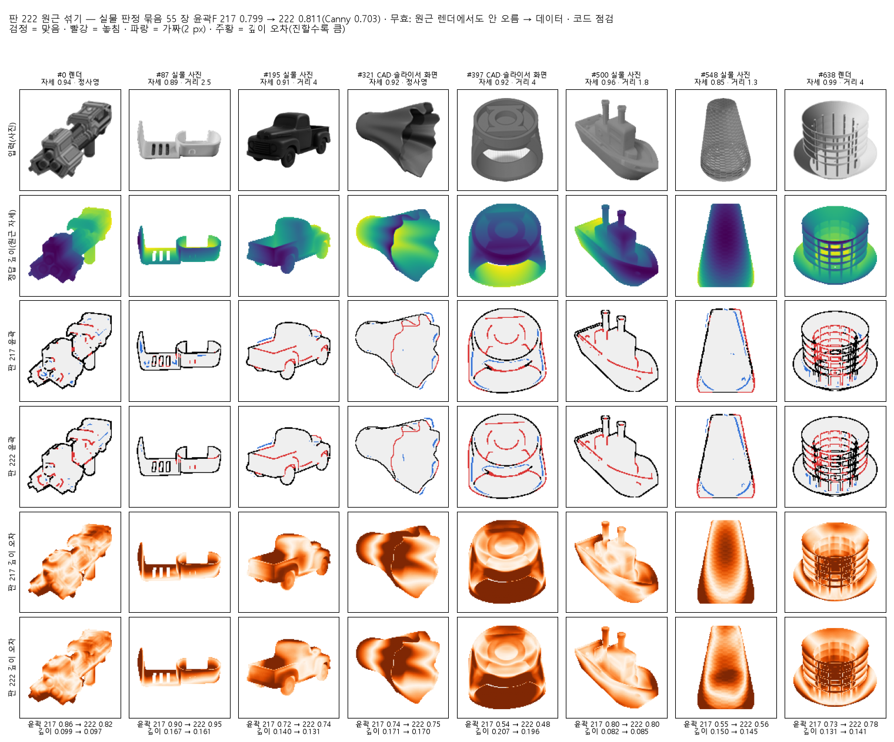

m1_tr0222_h000_원근섞기
학습 렌더의 절반을 원근 카메라로 그려 섞으면 실물 사진의 윤곽이 오르나?
판정 · 무효(카드 조건) — 원근 렌더 윤곽F 222 − 217 +0.002(217 이 이미 0.952 · 정사영 렌더 0.949) · 데이터 · 코드 점검 통과(원근 자기 검사 · 견본 · 원근 검증 손실 0.569 → 0.425) → 버그 아니라 무효 조건 전제(217 이 원근 렌더에 약함)가 틀림(재 보지 않고 가정 · 제 실수) · 실물 55 장 윤곽F 217 0.799 → 222 0.811(+0.012 · 구간 +0.002 ~ +0.023 · 둘째 갈래 +0.03 아래) · 깊이 0.120 → 0.114(Depth Anything 0.098) · 같은 55 장 정사영 정답으로는 217 0.715 → 실물 간극의 상당 몫은 정사영 정답(자) · 다음 = 실물 자를 원근 자세 정답 + 배경 거름으로 · 낮은 10 장 맥락 없는 눈 분류
결정 표(돌리기 전에 정함)
- 만약 실물 판정 묶음 윤곽F 222 − 217 ≥ +0.03 이고 짝 부트스트랩 95 % 구간이 0 위 · 그리고 정사영 렌더 시험 윤곽F 가 0.02 넘게 안 떨어짐
다음 원근 섞기 채택(바탕 = 222) → 그 위에 실물다운 렌더(색 · 질감 · 조명 · 배경) 섞는 판 - 만약 실물 윤곽F 차가 +0.03 아래이거나 구간이 0 을 걸침
다음 원근은 실물 간극의 주된 몫이 아님 → 깨끗한 실물에서 윤곽 낮은 10 장을 맥락 없는 서브 에이전트가 눈으로 분류 - 만약 실물은 첫 갈래 조건을 넘는데 정사영 렌더 시험 윤곽F 가 0.02 넘게 떨어짐
다음 원근 몫을 25 % 로 낮춰 다시
분석
한 줄로
물음: 학습 렌더의 절반을 원근 카메라로 그려 섞으면 실물 사진의 윤곽이 오르나?
답: 거의 안 오른다(+0.012). 원근 자체가 문제가 아니었다. 정사영으로만 배운 tr217 이 원근 렌더에서도 이미 0.952 를 낸다(정사영 렌더 0.949). 대신 다른 것을 찾았다. 실물 정답을 원근 자세로 다시 그리자 tr217 의 실물 윤곽이 0.715 에서 0.799 로 올랐다. 같은 55 장이고 망은 그대로다. 실물 간극의 상당 부분은 망이 아니라 정답(자)이 정사영이었던 탓이다.
왜 이 판을 했나
tr221 에서 실물 윤곽 실패는 미리 정한 규칙으로 「입력 종류」 를 따랐고, 결정 표는 원근 카메라를 섞는 판을 가리켰다. 깨끗한 40 장에서는 사진 실루엣이 정사영 정답과 덜 맞을수록 우리 망만 더 떨어졌다. 학습 렌더는 모두 정사영이었다.
바꾼 것 하나
학습 배치 32 장 가운데 16 장을 원근 렌더로 바꿨다. 같은 부품을 두 시점씩 새로 그렸고, 눈 거리는 1.3 ~ 4 다(반 화각 25° ~ 8.5°). 입력 렌더와 지도 여섯 장은 같은 원근 카메라로 그렸다. 나머지(망 · 손실 · 6,000 스텝 · 씨앗 0)는 tr217 과 같다. 실물 정답은 두 망 모두 같은 것으로 쟀다. tr220 자세 둘레에서 눈 거리까지 맞춰 다시 그렸고, 배경이 안 떼진 사진은 판정 묶음에서 뺐다(tr221).
결과

| tr217(정사영만) | tr222(원근 섞음) | 차(구간) | |
|---|---|---|---|
| 정사영 렌더 시험 윤곽 F | 0.949 | 0.947 | −0.002 |
| 원근 렌더 시험 윤곽 F | 0.952 | 0.954 | +0.002 |
| 실물 55 장 윤곽 F(Canny 0.703) | 0.799 | 0.811 | +0.012(+0.002 ~ +0.023) |
| 실물 55 장 깊이 오차(Depth Anything 0.098) | 0.120 | 0.114 | −0.006 |
| 같은 55 장 · tr220 정사영 정답으로 잰 윤곽 F | 0.715 | 0.728 |
넘겨보기: out/설명/캐드부품/모델222/넘김/넘겨보기_실물.html · 넘겨보기_원근렌더.html(git 밖).
미리 정한 판정은 「무효」 다. 원근 렌더에서 222 가 217 보다 +0.02 넘게 올라야 학습이 원근을 배운 것으로 보기로 했는데, +0.002 였다. 데이터 · 코드는 점검했다. 원근 카메라 자기 검사를 통과했고, 견본 렌더와 정답 선도 맞았으며, 원근 검증 손실은 0.569 → 0.425 로 내려갔다. 버그가 아니라 무효 조건의 전제가 틀렸다. 217 이 원근 렌더에서 약할 것이라고 재 보지도 않고 가정했다.
왜 이렇게 나왔나
확인한 것
- 렌더에서는 원근이 어렵지 않다. 217 은 원근 렌더에서 0.952 로, 정사영 렌더 0.949 와 같다.
- 실물 간극의 상당 부분은 자의 문제였다. 같은 55 장, 같은 217 망인데 정사영 정답으로는 0.715, 원근 자세 정답으로는 0.799 다. 사진 132 장 가운데 76 장은 원근 카메라가 정사영보다 실루엣에 더 잘 맞았다.
- 원근을 섞은 효과는 작지만 0 은 아니다. 윤곽 +0.012(구간 0 위 · 55 장 중 31 장 이김), 깊이 −0.006 이다. 렌더처럼 깨끗한 입력에서 가장 컸다(남의 렌더 0.858 → 0.889).
- 깊이는 여전히 Depth Anything 에 진다(0.114 대 0.098).
짐작 (아직 확인 안 함)
- 남은 간극(실물 0.80 대 렌더 0.95)은 넘겨보기에서 두 망이 같은 자리를 놓친다. 트럭 · 배의 안쪽 선, 반지 안쪽 고리, 철망, 기둥 우리처럼 가늘거나 되풀이되는 구조다. 생성기에 이런 모양이 드문지, 사진의 질감 · 조명 때문인지는 아직 가르지 않았다.
한계
- 제 실수. tr217 을 원근 렌더에 넣어 보는 데는 몇 분이면 됐다. 그것부터 쟀으면 원근이 문제가 아님을 학습(1 시간 반) 전에 알았다.
- 원근 렌더는 사진처럼 물체 크기로 다시 자르지 않았다. 그래서 테두리에 잘린 물체가 26 % 다(정사영 14 % · 사진 0 %). tr217 시험에서는 잘림이 정확도를 바꾸지 않았다(0.943 대 0.950).
- 원근 데이터 53 부품(0.4 %)은 일꾼을 새로 띄울 때 첫 작업이 넘어져 빠졌다. 다시 돌리면 된다.
- 씨앗 하나 · 55 장.
배운 것과 다음
원근은 망의 약점이 아니었고, 정사영 정답이 실물 점수를 0.08 깎고 있었다. 자를 고치니 실물 윤곽은 0.80(Canny 0.70)이다. 남은 간극은 가늘고 되풀이되는 구조의 안쪽 선이다.
- 실물 자를 원근 자세 정답과 배경 거름으로 바꾼다. tr220 · 221 숫자는 옛 자로 남긴다.
- 결정 표 둘째 갈래(차 < +0.03): 깨끗한 실물에서 윤곽이 가장 낮은 10 장을 맥락 없는 서브 에이전트가 눈으로 분류한다.
- 원근 섞기는 작게나마 이득(+0.012 · 깊이 −0.006)이라 다음 바탕 후보로 남긴다. 구(공) 모양이 생성기에 없는 것은 따로 후보로 둔다(11-18 사용자 「구체는 잘 모르는 것 같네」).
판 기록
- 카드 · 코드 커밋 8378e68(돌리기 전) · 11:28 ~ 13:05(사진 정답 2 분 · 원근 데이터 50 분 · 학습 38 분 · 잼 5 분).
- 판정 잼.json · 그림 그림.png · 학습 곡선 out/설명/캐드부품/모델222/곡선_원근222.json · 넘겨보기(학습 추이 · 실물 · 원근 렌더) out/설명/캐드부품/모델222/(git 밖).